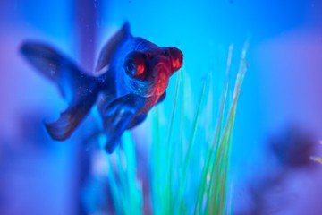

Fish
Fish represent a broad class of aquatic animals that can live in fresh or saltwater, depending on the species. Bringing fish into your home can be an exciting hobby, especially if you intend to breed them, and the presence of a fish tank in your home can induce feelings of peace and tranquility.
Whether you are bringing your fish home for the first time or maintaining your aquarium, it is important to test your water once per week to ensure it is free from toxins that can harm your fish.
Freshwater Fish
There are several freshwater fish to choose from when setting up your aquarium, but it is best to consult with a “Pexpert” to ensure your fish will get along! No matter the species, ensure your fish are suited for a freshwater environment by investing in a water testing kit. Follow these general water chemistry guidelines to ensure your fish will adapt well to your aquarium and avoid ingesting toxins that can harm or kill your fish:
- pH Level: 6.8–7.6 (7.0 is considered neutral)
- Ammonia: any level above zero is harmful to fish
- Nitrates: 5 to 10 ppm
- Nitrites: less than 0.5 ppm
Saltwater Fish
Saltwater fish also offer several options when it comes to choosing among species for your aquarium. As with freshwater fish, consult with a “Pexpert” to ensure your fish will get along and are suited for a saltwater environment. Following these general guidelines to avoid dangerous water conditions and ensure the appropriate salinity level for your fishies:
- Salinity: 1.020–1.028 sg
- pH Level: 7.6–8.4 (7.0 is considered neutral)
- Ammonia: any level above 0.1 ppm requires attention
- Nitrates: 10 to 40 ppm
- Nitrites: less than 0.2 ppm
For more information on making your tap water safe for your fish, please visit: The aquarium Wiki and FishBase
Maintenance Routines
Regular maintenance ensures that your fish thrive. Follow these tasks to maintain a healthy tank:
Weekly Tasks:
- Test water parameters (pH, ammonia, nitrates, nitrites).
- Remove debris and uneaten food.
- Check filter performance.
Monthly Tasks:
- Perform a 20-30% water change to remove accumulated toxins.
- Clean or replace the filter media.
- Check for any signs of algae or debris buildup in the tank or decorations.
By following a consistent maintenance schedule, your tank will remain healthy and your fish will thrive.
Recommended Products
Here are some essential products to help you maintain a healthy tank environment:
- Water Test Kits: Use a reliable aquarium test kit (e.g., API Freshwater Master Test Kit) to monitor key water parameters.
- Dechlorinator: Use products like Seachem Prime to remove chlorine and chloramine from tap water before adding it to the tank.
- Water Conditioners: API Stress Coat or similar products can help condition water and support fish health.
- Filter Media: Products like Fluval BioMax or Marineland Black Diamond help maintain water quality by providing biological filtration.
These products are designed to help you keep your water clean and safe for your fish.
Step-by-Step Water Testing
Testing your aquarium water is simple and essential. Here’s how you can easily monitor water quality:
- Collect a Sample: Fill a clean container with water from the tank. Avoid using water from the filter or heater.
- Use a Test Strip or Digital Meter: Dip a test strip or use a digital meter to test pH, ammonia, nitrites, and nitrates.
- Test Strips: Easy to use, but not as precise. Hold the strip in the water for a few seconds and compare the colors.
- Digital Meters: More accurate, but may be more expensive. Follow the manufacturer's instructions for use.
- Interpret Results: Cross-reference your test results with the optimal ranges provided for each parameter.
- Take Action: If results are outside the ideal range, take immediate steps to correct the water chemistry.